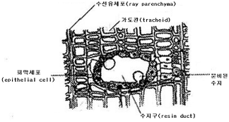
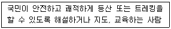
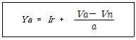
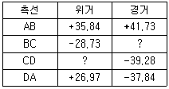
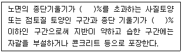
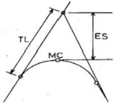

산림기사 (2016-08-21 기출문제)
1과목: 조림학
1. 종자의 발아휴면성 원인과 관련 없는 것은?
- 배의 미성숙
- 가스교환 촉진
- 종피의 기계적 작용
- 종자 내의 생장억제 물질 존재
(정답률: 86%)

2. 토양입자의 구분 중에서 자갈의 입경 크기 기준은?
- 0.001mm 이상
- 0.2mm 이상
- 2.0mm 이상
- 10.0mm 이상
(정답률: 79%)
3. 중림작업을 통한 갱신에 대한 설명으로 옳은 것은?
- 내음성이 약한 수종을 하층목으로 식재한다.
- 하층목은 개벌에 의한 맹아 갱신을 반복한다.
- 상층목으로 쓰이는 것은 지하고가 낮은 것이 좋다.
- 상층목이 하층목 생장에 방해되지 않도록 ha당 1000본 정도로 식재한다.
(정답률: 66%)
4. 토양 수분에 대한 설명으로 옳지 않은 것은?
- 중력수는 중력의 작용에 의하여 이동할 수 있어 토양공극으로부터 쉽게 제거된다.
- 토양 내 작은 교질 입자 주변에 존재하거나 화학적으로 결합한 결합수는 식물이 이용 가능하다.
- 모세관수는 중력에 저항하여 토양입자와 물분자 간의 부착력에 의해 모세관 사이에 남아있다.
- 포화습도의 공기 중에 시든 식물을 둔다 하더라도 시든 식물이 회복되지 않을 때의 수분량을 영구위조점이라 한다.
(정답률: 73%)
5. 왜림작업으로 갱신하려 할 때 왕성한 맹아 발아를 위해 가장 유리한 벌채 시기는?
- 겨울 ∼ 봄
- 봄 ∼ 여름
- 여름 ∼ 가을
- 가을 ∼ 겨울
(정답률: 75%)
6. 조림지의 풀베기 작업에 대한 설명으로 옳은 것은?
- 풀베기 작업은 겨울철에 실시한다.
- 밀식조림의 경우에는 줄베기 작업을 한다.
- 모두베기할 경우 조림목이 피압될 염려가 없다.
- 둘레베기 작업은 노동력이 가장 많이 필요하다.
(정답률: 62%)
7. 목부 조직의 횡단면이 다음 그림과 같은 형태를 보이는 수종은?

- Abies koreana
- Quercus mongolica
- Cornus controversa
- Robinia pseudoacacia
(정답률: 73%)
8. 산성 토양에 가장 잘 적응할 수 있는 수종은?
- Catalpa ovata
- Acer negundo
- Alnus japonica
- Larix kaempferi
(정답률: 60%)
9. 묘목의 굴취를 용이하게 하고 묘목의 생장을 조절하기 위해 실시하는 작업은?
- 단근
- 심경
- 관수
- 철선감기
(정답률: 87%)
10. 지존작업에 대한 설명으로 옳은 것은?
- 묘목을 심기 위하여 구덩이를 파는 작업이다.
- 개간한 곳에 조림 묘목을 식재하는 작업이다.
- 조림지에서 덩굴치기, 제벌을 행하는 것을 뜻한다.
- 조림예정지에서 잡초, 덩굴식물, 관목 등을 제거하는 작업이다.
(정답률: 83%)
11. 종자를 파종하기 한 달쯤 전에 노천매장을 하여 발아를 촉진시키는 수종은?
- 삼나무
- 벚나무
- 단풍나무
- 들메나무
(정답률: 68%)
12. 삽목 방법에 대한 설명으로 옳지 않은 것은?
- 삽수의 끝눈은 남쪽을 향하게 한다.
- 삽수가 건조하거나 눈이 상하지 않도록 한다.
- 포플러류 같은 속성수는 삽수를 수직으로 세운다.
- 비가 온 직후 상면이 습할 때 실시하면 활착률이 높다.
(정답률: 75%)
13. 목본식물 내 존재하는 지질(lipid)에 대한 설명으로 옳지 않은 것은?
- 보호층을 조성한다.
- 저항성을 증진한다.
- 세포의 구성성분이다.
- 세포액의 삼투압을 증가시킨다.
(정답률: 72%)
14. 산림 토양에서 부식에 대한 설명으로 옳지 않은 것은?
- 토양 미생물의 생육을 자극한다.
- 토양의 입단구조를 형성하게 한다.
- 칼슘, 마그네슘, 칼륨 등 염기를 흡착하는 능력인 염기 치환 용량이 작다.
- 임상 내 H층에 해당되며 유기물이 많이 함유되어 있다.
(정답률: 75%)
15. 가지치기에 대한 설명으로 옳지 않은 것은?
- 줄기의 완만도를 조절한다.
- 활엽수는 지융부를 제거한다.
- 옹이 없는 무절재를 생산한다.
- 산불 발생 시 수관화 확산을 감소시킨다.
(정답률: 76%)
16. 암수딴그루인 수종으로만 짝지어진 것은?
- 소철, 은행나무
- 소나무, 삼나무
- 버드나무, 자작나무
- 단풍나무, 상수리나무
(정답률: 68%)
17. 종자 정선 시 입선법을 이용하기 가장 적당하지 않은 수종은?
- 목련
- 밤나무
- 자작나무
- 가래나무
(정답률: 59%)
18. 제초의 효과가 있는 성분은?
- IAA
- NAA
- TTC
- 2,4 - D
(정답률: 79%)
19. 처음에는 피압된 가장 낮은 수관층의 수목을 벌채하고 그 후 점차 상층의 수목을 제거하는 HAWLEY의 간벌방법은?
- A종간벌
- 수관간벌
- 하층간벌
- 상층간벌
(정답률: 78%)
20. 파종 후 발아 과정에서 해가림이 필요한 수종은?
- 느티나무
- 가문비나무
- 물푸레나무
- 아까시나무
(정답률: 69%)
2과목: 산림보호학
21. 솔나방에 대한 설명으로 옳지 않은 것은?
- 알로 월동한다.
- 1년에 1회 발생한다.
- 성충은 주로 밤에 활동한다.
- 6월∼7월경 번데기가 된다.
(정답률: 65%)
22. 잎을 가해하는 해충은?
- 박쥐나방
- 밤바구미
- 어스렝이나방
- 미끈이하늘소
(정답률: 68%)
23. 아황산가스 등 대기오염의 피해를 받은 나무에 심하게 나타나는 병은?
- 소나무 잎녹병
- 소나무 줄기녹병
- 낙엽송 가지끝마름병
- 소나무 그을음잎마름병
(정답률: 52%)
24. 곤충의 수컷 생식기관이 아닌 것은?
- 수정낭
- 수정관
- 부속샘
- 저정낭
(정답률: 66%)
25. 기주를 교대하며 발생하는 병이 아닌 것은?
- 향나무 녹병
- 소나무 혹병
- 포플러 잎녹병
- 삼나무 붉은마름병
(정답률: 70%)
26. 리기다소나무 조림지에 피해를 주는 푸사리움 가지마름병에 대한 설명으로 옳지 않은 것은?
- 병원균은 상처를 통해 침입한다.
- 감염된 잎은 빛바랜 갈색으로 말라 죽는다.
- 바람이 약한 지역에 나무는 더 심하게 발생한다.
- 봄부터 가을까지 특히 태풍이 지나간 다음 터부코나졸 유탁제를 살포한다.
(정답률: 73%)
27. 보르도액을 반복하여 사용하면 어떤 성분이 토양에 축적되어 수목에 독성을 나타낼 수 있는가?
- 철
- 구리
- 붕소
- 망간
(정답률: 76%)
28. 수목에 나타나는 현상 중 표징에 해당하는 것은?
- 부패
- 위조
- 얼룩
- 포자형성
(정답률: 73%)
29. 제초제로 인한 수목 피해에 대한 설명으로 옳지 않은 것은?
- 피해목 주변의 토양을 비닐로 피복하면 제초제 성분의 해독이 더 어렵다.
- 피해증상은 전신적으로 나타나는 경우보다 국부적으로 나타나는 경우가 많다.
- 동일 장소의 서로 다른 수종이나 지표의 초본 식물에도 비슷한 증상이 나타난다.
- 병해충의 피해와 혼동되는 경우가 많으므로 정확한 진단에 따른 대책이 필요하다.
(정답률: 71%)
30. 수목의 뿌리를 통해서 감염되지 않는 것은?
- 혹병
- 모잘록병
- 그을음병
- 자주빛날개무늬병
(정답률: 76%)
31. 세균이 수목에 침입하는 경로가 아닌 것은?
- 각피
- 수공
- 기공
- 상처
(정답률: 79%)
32. 솔잎혹파리의 천적으로 생물적 방제를 위해 방사하는 것은?
- 상수리좀벌
- 노란꼬리좀벌
- 남색긴꼬리좀벌
- 솔잎혹파리먹좀벌
(정답률: 76%)
33. 물에 녹지 않는 유효성분을 유기용매에 녹여 유화제를 첨가한 용액으로 제조한 약제는?
- 유제
- 액제
- 수용제
- 수화제
(정답률: 76%)
34. 가구, 건물 및 마른 나무 등에 구멍을 뚫고 들어가 표면만 남기고 내부를 불규칙하게 식해하는 해충은?
- 가루나무좀
- 밤나무혹벌
- 천막벌레나방
- 호두나무잎벌레
(정답률: 84%)
35. 기주식물 뿌리에 기생하여 피해를 주는 것은?
- 새삼
- 환삼덩굴
- 꼬리겨우살이
- 오리나무더부살이
(정답률: 58%)
36. 수목병 방제를 위한 예방법과 가장 거리가 먼 것은?
- 윤작
- 종묘소독
- 항생제 주입
- 혼효림 조성
(정답률: 61%)
37. 소나무재선충병에 대한 설명으로 옳은 것은?
- 기공을 통해 침입한다.
- 잣나무에서도 발생한다.
- 중간기주는 참나무류이다.
- 매개충은 담배장님노린재이다.
(정답률: 76%)
38. 솔수염하늘소에 대한 설명으로 옳지 않은 것은?
- 유충으로 월동한다.
- 남부지방에서는 1년에 2회 발생한다.
- 성충의 우화시기는 5월∼8월경이다.
- 성충은 쇠약목이나 고사목에 산란한다.
(정답률: 62%)
39. 토양에 의해 전반되는 병은?
- 향나무 녹병
- 소나무 모잘록병
- 밤나무 줄기마름병
- 오동나무 빗자루병
(정답률: 77%)
40. 오동나무 빗자루병 예방을 위해 매개충인 담배 장님노린재의 방제시기로 가장 적절한 것은?
- 1월 ∼ 3월
- 4월 ∼ 6월
- 7월 ∼ 9월
- 10월 ∼ 12월
(정답률: 67%)
3과목: 임업경영학
41. 다음 설명에 해당하는 것은?(오류 신고가 접수된 문제입니다. 반드시 정답과 해설을 확인하시기 바랍니다.)

- 숲해설가
- 유아숲지도사
- 숲길체험지도사
- 산림치유지도사
(정답률: 82%)
42. 산림의 이용구분에 따른 보전산지 중 공익용 산지가 아닌 것은?
- 채종림의 산지
- 사찰림의 산지
- 자연휴양림의 산지
- 산림보호구역의 산지
(정답률: 64%)
43. 소나무 임분의 벌기평균생장량이 6m3/ha이고, 윤벌기가 50년이라고 할 때 이 임분의 법정연벌량과 법정수확률은 각각 얼마인가?
- 250m3/ha, 4%
- 250m3/ha, 5%
- 300m3/ha, 4%
- 300m3/ha, 5%
(정답률: 77%)
44. 임업 순수익의 계산 방법으로 옳은 것은?
- 임업조수익 + 임업경영비
- 임업조수익 - 감가상각액
- 임업조수익 + 가족임금추정액
- 임업조수익 - 임업경영비 - 가족임금추정액
(정답률: 81%)
45. 산림의 순수익이 최대가 되는 벌기령 결정과 가장 거리가 먼 인자는?
- 이율
- 조림비
- 관리비
- 주벌수입
(정답률: 41%)
46. Huber식을 이용하여 중앙직경이 10cm, 재장이 20m인 통나무의 재적(m3)은?
- 0.0785
- 0.1570
- 0.7850
- 1.5700
(정답률: 71%)
47. 복합적 임업경영의 형태 중에서 농지의 주변이나 둑, 농지와 산지의 경계에 유실수, 특용수, 속성수 등을 식재하여 임업 수입의 조기화를 도모하는 방법은?
- 혼목임업
- 혼농임업
- 농지임업
- 부산물임업
(정답률: 73%)
48. 임지의 자연적 생산력을 가장 포괄적으로 표시하는 것은?
- 지리
- 지위
- 토양습도
- 임목비옥도
(정답률: 78%)
49. 다음은 수확조절방법 중의 Kameral Taxe법 공식이다. 이 때 Ir의 의미는?

- 연간 생장율
- 작업급의 생장량
- 연간 가치 생장량
- 연간 벌채량과 생장량과의 차이
(정답률: 52%)
50. 산림환경자원으로서 야생동물의 서식밀도는 어떻게 표시하는가?
- 10ha 당의 마리수(봄철)
- 10ha 당의 마리수(여름철)
- 100ha 당의 마리수(봄철)
- 100ha 당의 마리수(여름철)
(정답률: 73%)
51. 기준 벌기령 이상에 해당하는 임지에서 수확을 위한 벌채가 아닌 것은?
- 골라베기
- 모두베기
- 솎아베기
- 모수작업
(정답률: 64%)
52. 임업경영 성과분석 방법 중 임업의존도의 계산식으로 옳은 것은?
- (가계비/입업소득)×100
- (입업소득/가계비)×100
- (입업소득/임가소득)×100
- (임업소득/임업조수익)×100
(정답률: 74%)
53. 산림평가에 대한 설명으로 옳지 않은 것은?
- 부동산 감정평가와 동일한 평가방법 적용이 용이하다.
- 공익적 기능을 포함한 다면적 이용에 대한 평가도 포함한다.
- 산림을 구성하는 임지ㆍ임목ㆍ부산물 등의 경제적 가치를 평가한다.
- 생산기간이 장기적이고 금리의 변동이 커서 정밀하게 평가하기 쉽지 않다.
(정답률: 80%)
54. 수간석해를 위한 원판 채취방법에 대한 설명으로 옳지 않은 것은?
- 원판의 두께는 10cm가 되도록 한다.
- 원판을 채취할 때는 수간과 직교하도록 한다.
- 측정하지 않을 단면에는 원판의 번호와 위치를 표시하여 둔다.
- Huber식에 의한 방법에서 흉고이상은 2m마다 원판을 채취하고 최후의 것은 1m가 되도록 한다.
(정답률: 69%)
55. 벌기에 있어서 손익을 계산하는 방법 중 완전 간단 작업에 해당하는 것은?
- 임목매상대 - 조림비원가누계 + 관리비원가누계
- 임목매상대 + 조림비원가누계 + 관리비원가누계
- 임목매상대 + 조림비원가누계 - 관리비원가누계
- 임목매상대 - 조림비원가누계 - 관리비원가누계
(정답률: 71%)
56. 시장가역산법에 의한 임목가 결정에 필요한 인자로 가장 거리가 먼 것은?
- 원목시장가
- 벌채운반비
- 기업이익율
- 조림무육관리비
(정답률: 66%)
57. 우리나라에서는 전국 산림을 대상으로 10년 마다 계획을 수립하는데 임업경영의 조직별로 산림기본계획, 지역산림계획, 산림경영계획을 수립한다. 다음 중 산림경영계획에서 수립하는 사항이 아닌 것은?
- 소반별 벌채에 관한 사항
- 연차별 식재면적에 관한 사항
- 풀베기, 간벌 및 기타 육림에 관한 사항
- 산림의 합리적 이용과 산림자원의 배양에 관한 사항
(정답률: 53%)
58. 전체 임목본수 200본 중에서 표준목을 10본 선정하고자 한다. 어떤 직경급의 본수가 35본이면 이 직경급에 몇 본의 표준목을 실제적으로 배정하는 것이 가장 좋은가?
- 1본
- 2본
- 3본
- 4본
(정답률: 70%)
59. 산림청장은 산림복지의 진흥을 위하여 산림복지진흥계획을 몇 년마다 수립 및 시행하여야 하는가?
- 5년
- 10년
- 15년
- 20년
(정답률: 65%)
60. 농업이나 축산 또는 기타 사업을 하면서 여력을 이용하여 임업을 경영하는 형태는?
- 농가임업
- 부업적 임업
- 겸업적 임업
- 주업적 임업
(정답률: 72%)
4과목: 임도공학
61. 적정임도밀도가 5m/ha일 때 임도간격은 얼마인가?
- 1000m
- 2000m
- 3000m
- 4000m
(정답률: 78%)
62. 임도의 노체와 노면의 구조에 관한 설명으로 옳은 것은?
- 쇄석을 노면으로 사용한 것은 사리도이다.
- 노체는 노상, 노반, 기층, 표층 순서대로 시공한다.
- 토사도는 교통량이 많은 곳에 적용하는 것이 가장 경제적이다.
- 노상은 임도의 최하층에 위치하여 다른 층에 비해 내구성이 큰 재료를 필요로 한다.
(정답률: 76%)
63. 중심선측량과 영선측량에 대한 설명으로 옳지 않은 것은?
- 영선은 절토작업과 성토작업의 경계선이 되지는 않는다.
- 영선측량은 시공기면의 시공선을 따라 측량하므로 굴곡부를 제외하고는 계획고 상태로 측량한다.
- 균일한 사면일 경우에는 중심선과 영선은 일치되는 경우도 있지만 대개 완전히 일치되지 않는다.
- 중심선측량은 지반고 상태에서 측량하며 종단면도상에서 계획선을 설정하여 계획고를 산출한 후 종단과 횡단의 형상이 결정된다.
(정답률: 79%)
64. 수확한 임목을 임내에서 박피하는 이유로 가장 부적합한 것은?
- 신속한 건조
- 병충해 피해방지
- 운재작업의 용이
- 고성능 기계화로 생산원가의 절감
(정답률: 74%)
65. 다음과 같은 폐합다각측량의 성과표를 이용 하여 측선CD의 배횡거를 구한 값으로 옳은 것은?(단, 위ㆍ경거의 오차는 없는 것으로 함)

- 77.57
- 90.12
- 114.96
- 118.85
(정답률: 50%)
66. 설계속도가 25km/시간, 가로 미끄럼에 대한 노면과 타이어의 마찰계수가 0.15, 노면의 횡단기울기가 5%일 경우 곡선반지름은? (단, 소수점 이하는 생략)
- 약 25m
- 약 30m
- 약 35m
- 약 40m
(정답률: 54%)
67. 임도설계 시 설계서에 포함되지 않는 것은?
- 시방서
- 예산내역서
- 측량성과서
- 공정별 수량계산서
(정답률: 67%)
68. 컴퍼스의 검사 및 조정에 대한 설명으로 옳지 않은 것은?
- 자침은 어떠한 곳에 설치하여도 운동이 활발하고 자력이 충분하여야 한다.
- 컴퍼스를 수평으로 세웠을 때 자침의 양단이 같은 도수를 가리키고 있어야 한다.
- 수준기의 기포를 중앙에 오게 한 후 수평으로 180°회전시켜도 기포가 중앙에 있어야 한다.
- 컴퍼스를 세우고 정준한 다음 적당한 거리에 연직선을 만들어 시준할 때 시준종공 또는 시준사와 수평선이 일치하면 정상이다.
(정답률: 50%)
69. 평판측량에 있어서 어느 다각형을 전진법에 의하여 측량하였다. 이때 폐합오차가 20cm 발생하였다면 측점 C의 오차 배분량은? (단, AB = 50m, BC = 20m, CD = 20m, DA = 10m임)
- 0.1m
- 0.14m
- 0.18m
- 0.2m
(정답률: 52%)
70. 임도 노면의 시공에 대한 사항으로 다음 ( ) 안에 공통적으로 해당하는 것은?

- 8
- 13
- 15
- 18
(정답률: 66%)
71. 산림토목 시공용 기계 중 정지작업에 가장 적합한 것은?
- 클램 쉘
- 드랙 라인
- 파워 셔블
- 모터 그레이더
(정답률: 82%)
72. 임도의 교각법에 의한 곡선 설치 시 각 기호에 대한 용어가 올바르게 나열된 것은?

- TL:접선길이, MC:곡선중점, ES:곡선길이
- TL:곡선길이, MC:곡선중점, ES:접선길이
- TL:접선길이, MC:곡선중점, ES:외선길이
- TL:곡선길이, MC:곡선중점, ES:외선길이
(정답률: 77%)
73. 지반조사에 이용되는 것이 아닌 것은?
- 오거 보링
- 관입 시험
- 케이슨 공법
- 파이프 때려박기
(정답률: 69%)
74. 지표면 및 비탈면의 상태에 따른 유출계수가 가장 작은 것은?
- 떼비탈면
- 흙비탈면
- 아스팔트포장
- 콘크리트포장
(정답률: 57%)
75. 일반지형에서 임도의 설계속도가 20km/시간일 때 적용하는 종단기울기는?
- 7% 이하
- 8% 이하
- 9% 이하
- 10% 이하
(정답률: 57%)
76. 배수 구조물의 크기를 결정하는데 영향을 가장 적게 미치는 요인은?
- 구조물의 재질
- 집수구역의 면적
- 집수구역의 지형 및 식생구조
- 확률강우에 의한 최대 시우량
(정답률: 63%)
77. 흙의 동결로 인한 동상을 가장 받기 쉬운 토질은?
- 모래
- 실트
- 자갈
- 점토
(정답률: 70%)
78. 어떤 측점에서부터 차례로 측량을 하여 최후에 다시 출발한 측점으로 되돌아오는 측량방법으로 소규모의 단독적인 측량에 많이 이용되는 트래버스 방법은?
- 결합 트래버스
- 폐합 트래버스
- 개방 트래버스
- 다각형 트래버스
(정답률: 76%)
79. 임도 비탈면의 녹화공법 종류에 속하지 않는 것은?
- 떼단쌓기 공법
- 분사식 파종 공법
- 비탈선떼붙이기 공법
- 비탈격자틀붙이기 공법
(정답률: 62%)
80. 임도교량에 미치는 활하중에 속하는 것은?
- 주보의 무게
- 교상의 시설물
- 바닥틀의 무게
- 동행하는 트럭의 무게
(정답률: 84%)
5과목: 사방공학
81. 중력에 의한 침식에 해당하지 않는 것은?
- 지활형 침식
- 유동형 침식
- 지중형 침식
- 붕괴형 침식
(정답률: 77%)
82. 수제에 대한 설명으로 옳지 않은 것은?
- 하향수제는 두부의 세굴작용이 가장 약하다.
- 상향수제는 길이가 가장 짧고 공사비가 저렴하다.
- 유수의 월류 여부에 따라 월류수제와 불월류수제로 나눈다.
- 계류의 유심 방향을 변경하여 계안 침식을 방지하기 위해 계획한다.
(정답률: 65%)
83. 본댐의 유효고가 H(m)이고 월류수심이 t(m)일 때, 본댐과 앞댐과의 간격L(m)을 구하는 식은? (단, 낮은 댐의 경우)
- L ≥ 1.5 × (H - t)
- L ≥ 2.0 × (H - t)
- L ≥ 1.5 × (H + t)
- L ≥ 2.0 × (H + t)
(정답률: 49%)
84. 산지사방사업에서 1m 높이의 돌쌓기를 하 때 찰쌓기의 표준 기울기는?
- 1 : 0.20 ∼ 0.25
- 1 : 0.25 ∼ 0.30
- 1 : 0.30 ∼ 0.35
- 1 : 0.35 ∼ 0.40
(정답률: 49%)
85. 우량계가 유역에 불균등하게 분포되었을 경우 평균 강우량 산정 방법은?
- 등우선법
- 침투형법
- 산술평균법
- Thiessen법
(정답률: 76%)
86. 황폐계류에 대한 설명으로 옳지 않은 것은?
- 유량이 강우에 의해 급격히 증감한다.
- 유로연장이 비교적 길고 하상 기울기가 완만하다.
- 토사생산구역, 토사유과구역, 토사퇴적구역으로 구분된다.
- 호우가 끝나면 유량은 격감되고 모래와 자갈의 유송은 완전히 중지된다.
(정답률: 64%)
87. 산지사방 녹화공사를 위한 묘목심기의 1ha당 식재본수로 가장 적합한 것은?
- 2000 ∼ 4000본
- 4000 ∼ 6000본
- 6000 ∼ 8000본
- 8000 ∼ 10000본
(정답률: 60%)
88. 흙댐에 관한 설명으로 옳지 않은 것은?
- 심벽 재료로는 사질토나 점질토를 사용한다.
- 일반적으로 흙댐마루의 나비는 2 ∼ 5m 정도로 한다.
- 유역면적이 비교적 좁고 유량과 유송토사가 적지만 계폭이 비교적 넓은 경우에 건설한다.
- 포화수선은 댐 밑 외부에 있어야 댐이 안정되고, 심벽은 포화수선을 위로 올려주는 역할을 한다.
(정답률: 53%)
89. 통나무쌓기 흙막이의 높이는 보통 얼마로 하는가?
- 0.5m 이하
- 1.5m 이하
- 2.5m 이하
- 3.5m 이하
(정답률: 64%)
90. 해안사방에서 사초심기공법에 관한 설명으로 옳지 않은 것은?
- 망구회 크기는 2m × 2m 구획으로 내부에도 사이심기를 한다.
- 식재사초는 모래의 퇴적으로 잘 말라죽지 않는 수종으로 선택한다.
- 다발심기는 사초 30 ∼ 40포기를 한다발로 만들어 30 ∼ 50cm 간격으로 심는다.
- 줄심기는 1 ∼ 2주를 1열로 하여 주간거리 4 ∼ 5cm, 열간거리 30 ∼ 40cm가 되도록 심는다.
(정답률: 68%)
91. 폭 10m, 높이 5m인 직사각형 단면 야계수로에 수심 2m, 평균유속 3m/sec로 유출이 일어날 때의 유량(m3/sec)은?
- 15
- 30
- 60
- 150
(정답률: 65%)
92. 낙석방지망덮기 공법에 대한 설명으로 옳지 않은 것은?
- 철망눈의 크기는 5mm 정도이다.
- 합성섬유망은 100kg 이내의 돌을 대상으로 한다.
- 와이어로프의 간격은 가로와 세로 모두 4 ∼ 5m로 한다.
- 철망, 합성섬유망 등을 사용하여 비탈면에서 낙석이 발생하지 않도록 한다.
(정답률: 63%)
93. 개수로에서 이용하는 평균유속공식이 아닌 것은?
- Chezy 공식
- Basin 공식
- Kutter공식
- Thiery공식
(정답률: 53%)
94. 산지사방의 주요 목적과 거리가 먼 것은?
- 사방 조림 확대
- 붕괴 확대 방지
- 표토 침식 방지
- 산사태 위험 방지
(정답률: 73%)
95. Q=C×I×A로 나타내는 최대홍수량 산정방법은? (단,Q는 유역출구에서의 최대홍수량, C는 유출계수, I는 강우강도, A는 유역면적)
- 시우량법
- 유출량법
- 합리식법
- 홍수위흔적법
(정답률: 61%)
96. 돌쌓기 공사에서 금기돌이 아닌 것은?
- 굄돌
- 뜬돌
- 거울돌
- 포갠돌
(정답률: 79%)
97. 초기황폐지 단계에서 복구되지 않으면 점점 더 급속히 악화되어 가까운 장래에 민둥산이나 붕괴지가 될 위험성이 있는 상태는?
- 척악임지
- 임간나지
- 황폐이행지
- 특수황폐지
(정답률: 75%)
98. 지하수가 유출되는 절토사면에 설치하는 가장 적합한 공작물은?
- 집수정
- 선떼붙이기
- 산복 돌수로
- 돌망태 옹벽
(정답률: 52%)
99. 콘크리트의 압축강도와 가장 관계 깊은 것은?
- 물 - 잔골재 비
- 물 - 시멘트 비
- 물 - 굵은골재 비
- 물 - 염화칼슘 비
(정답률: 79%)
100. 침식에 대한 설명으로 옳지 않은 것은?
- 가속 침식은 자연 침식 또는 지질학적 침식이라고 한다.
- 침식은 그 원인에 따라 크게 정상 침식과 가속 침식으로 나뉜다.
- 정상 침식은 자연적인 지표의 풍화 상태로써 토양의 형성과 분포에 기여한다.
- 가속 침식은 주로 사람의 작용에 의한 지피식생의 파괴와 물이나 바람 등의 작용에 의하여 이루어진다.
(정답률: 68%)